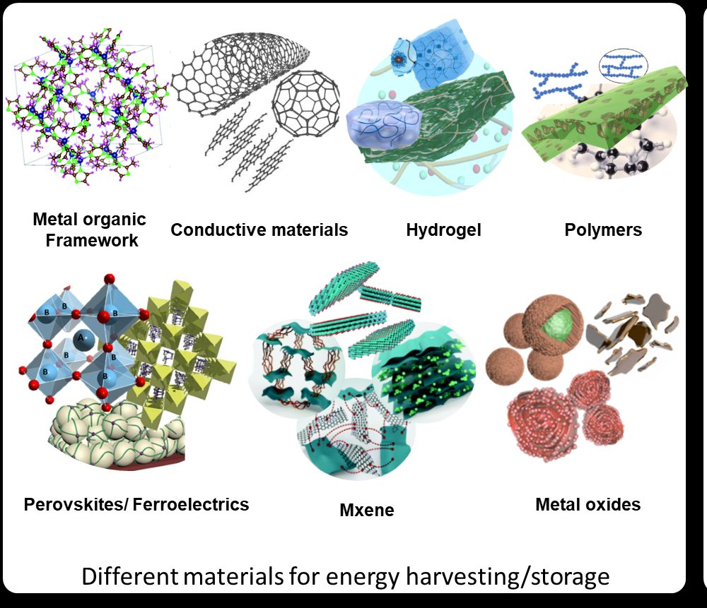
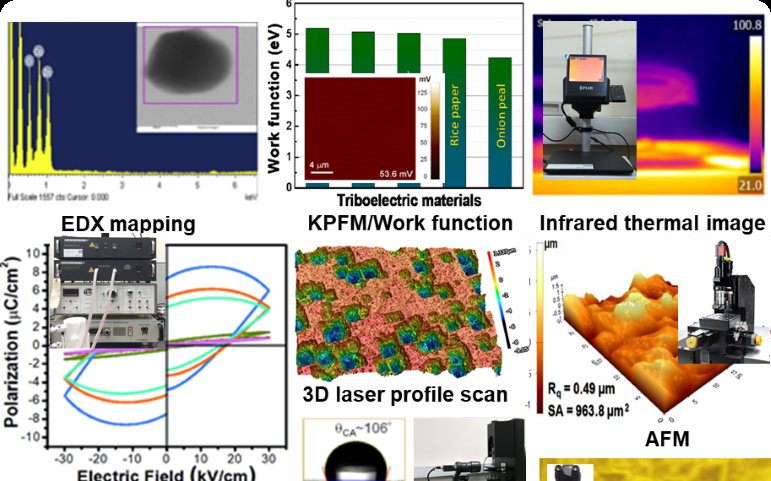
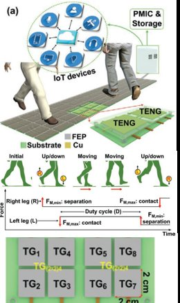
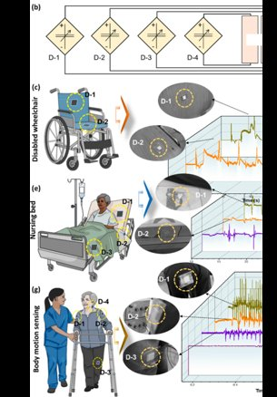
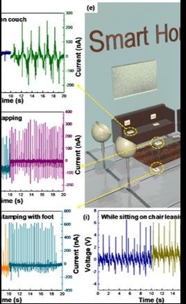
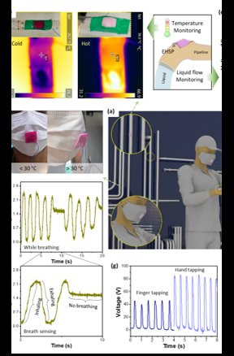
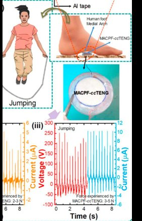
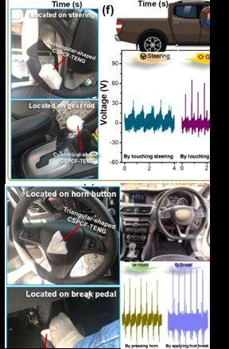
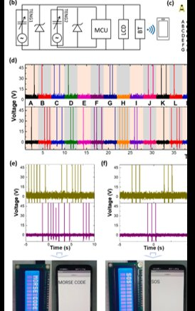

Advanced Functional Materials · 2026
Hybrid nanogenerators from MOF-embedded electrospun membranes
Breathable fibre membranes that harvest mechanical energy and feed IoT sensing directly.
Read the paper →Materials and device engineer. I take an idea from a powder in a flask to a working, connected prototype, and I have done it across sensors, energy harvesters and IoT systems.
Postdoctoral researcher · Daegu Gyeongbuk Institute of Science and Technology (DGIST) and KAIST InnoCORE PRISM-AI Center, Republic of Korea
Currently exploring how to take this capability out of the lab and into products.
Publication metrics update automatically from OpenAlex via ORCID. Google Scholar usually shows slightly higher counts.
I synthesise the materials, fabricate the devices, and integrate the full system. That means a prototype can go from a powder in a flask to a working, connected sensor inside one lab.

Functional materials tuned to generate charge from pressure, friction, vibration or heat. Many are biodegradable or made from waste, such as cotton and silk.

Thin films and devices made by printing, spinning, coating and patterning, then characterised from the nanoscale to full electrical output.

Harvesters wired into power-management circuits, wireless modules and AI-based data analysis, so a sensor becomes a working product rather than a lab result.
Each tile is a working demonstration from a published paper: a harvester, a circuit, and a real task it performs with no battery.






Breathable fibre membranes that harvest mechanical energy and feed IoT sensing directly.
Read the paper →A porous cellulose film from discarded cotton that keeps working in humid conditions and biodegrades afterwards.
Read the paper →One device that harvests energy, senses temperature by changing colour, and streams the data wirelessly.
Read the paper →Explains how charge builds on triboelectric surfaces, then pairs it with a circuit that delivers usable power to IoT devices.
Read the paper →Full list of papers on Google Scholar and ORCID.
Open to collaboration, partnerships and new ideas.
Department of Energy Science and Engineering
Daegu Gyeongbuk Institute of Science and Technology (DGIST)
Daegu 42988, Republic of Korea
KAIST InnoCORE PRISM-AI Center
Daejeon 34141, Republic of Korea